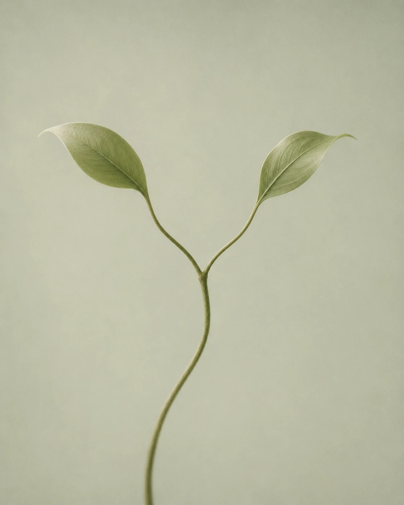

Sommige beslissingen overleven elke lijst met voor- en nadelen. Je denkt erover onder de douche, in de auto, om drie uur ’s nachts, en je komt geen stap verder. Dat is meestal een teken dat de echte vraag niet de vraag is die je stelt.

Sommige beslissingen overleven elke lijst met voor- en nadelen. Je denkt erover onder de douche, in de auto, om drie uur ’s nachts, en je komt geen stap verder. Dat is meestal een teken dat de echte vraag niet de vraag is die je stelt.
Pam en Sam blijven vragen tot je hem vindt. Geen kant-en-klaar advies dat je morgen weer kwijt bent. Alleen de vragen die je jezelf niet stelde, en één stap die je vandaag kunt zetten.
Kies Pam voor warm en empathisch. Kies Sam voor direct en nuchter. 6 vragen gratis, anoniem, niets opgeslagen op onze servers.
Zit je er zo doorheen dat je donkere gedachten krijgt? Bel 113 of 0800-0113, dag en nacht. Bij direct gevaar: 112.